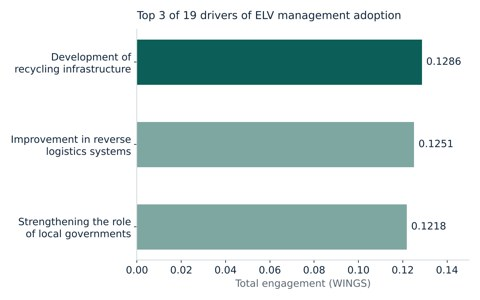
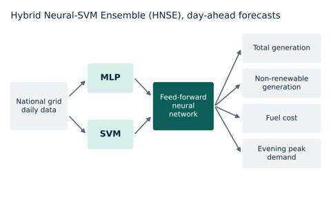
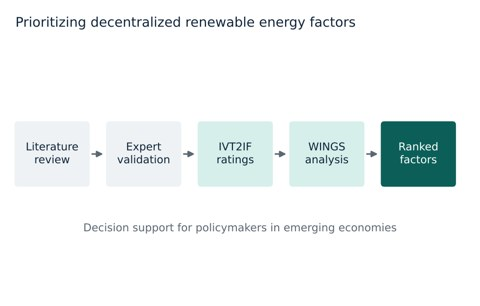

Drivers of end-of-life vehicle management adoption in Bangladesh
Of 19 drivers, recycling infrastructure, reverse logistics and the role of local government had the most influence.
Lecturer, Industrial and Production Engineering
Ahsanullah University of Science and Technology, Dhaka
I apply machine learning to human-centered industrial systems. My work covers the physiological workload of garment workers measured with ECG, EMG, EDA and EEG, multivariate forecasting for energy and supply chains, and fuzzy decision analytics for sustainability in emerging economies. I graduated first in my batch from AUST in 2025 and now teach in its Department of Industrial and Production Engineering.


